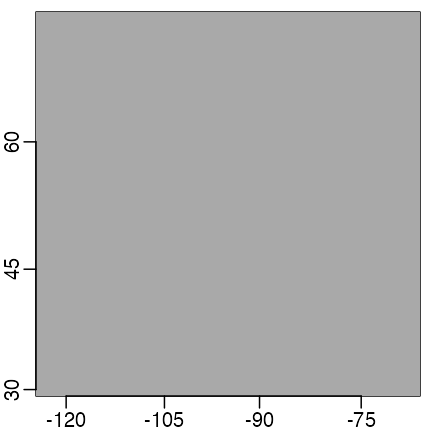

4. Using map projections
Dan Kelley (https://orcid.org/0000-0001-7808-5911)
2022-01-10
Source:vignettes/D_map_projections.Rmd
D_map_projections.RmdAbstract. An overview of the handling of map projections in oce is presented, along with a few examples of common projections.
Introduction
Map projections provide methods for representing the three-dimensional surface of the earth as two-dimensional plots. Although most oceanographers are likely to be familiar with the basic ideas of map projection, they may find it helpful to consult the wide literature on this topic, whether to learn about the details of individual projections and to get advice on the best choice of projection for a particular task. Snyder (1987), Snyder (1993) and Snyder and Voxland (1994) are all excellent sources on these topics, and the first and last of these are available for free online.
Oce handles map projections by calling the sf_project function of the sf R package, and so the notation for representing the projection is borrowed from sf. This system will be familiar to many readers, because it is used in other R packages, and more widely in the software called PROJ, which has interfaces in python and other programming languages (PROJ contributors, 2020). Since oce uses inverse projections in some of its graphical work, only PROJ projections that have inverses are incorporated into oce. Furthermore, some projections are omitted from oce because they have been witnessed to cause problems on the oce developer’s computers, including infinite loops and core dumps. See the help for the oce function mapPlot for a list of the available projections, and some advice on choosing them.
You must ensure that the sf package is installed for the examples provided in this vignette to work. If this package is not installed, it may be installed with
install.packages("sf")(Of course, this step need not be repeated to use oce.)
There are far too many projections to illustrate here. See https://dankelley.github.io/r/2015/04/03/oce-proj.html for a blog item that provides examples of the available projections. Note that some have a problem with spurious horizontal lines. This can result from coastline segments that cross the edge of the plotting area, and getting rid of this is tricky enough to be the heart of the longest-lived bug in the oce issue list, i.e. https://github.com/dankelley/oce/issues/388. In some instances the function coastlineCut() can help, but it is provisional and subject to change.
Avoiding projections for small regions
For map views that span only a few tens or hundreds of kilometers, it may be sufficient to plot directly, in rectilinear longitude-latitude space, but with an appropriate aspect ratio so that circular islands will appear circular in the plot.
To see the need for setting the aspect ratio, consider the following view of eastern North America.
library(oce)
#> Loading required package: gsw
data(coastlineWorld)
lon <- coastlineWorld[["longitude"]]
lat <- coastlineWorld[["latitude"]]
par(mar=c(4, 4, 0.5, 0.5))
plot(lon, lat, type="l",
xlim=c(-130, -50), ylim=c(40, 50))
Readers familiar with this region will notice that the coastline shapes are distorted. The solution to this problem is to set the asp argument of plot() to a value that will compensate for meridional convergence at the poles, as below.
par(mar=c(4, 4, 0.5, 0.5))
plot(lon, lat, type="l",
xlim=c(-130, -50), ylim=c(40, 50), asp=1/cos(45*pi/180))
Although the above approach is not exactly taxing, the effort of setting the aspect ratio and setting line-type plots can be spared by using the generic plot() function for coastline objects, as follows.
plot(coastlineWorld, clongitude=-90, clatitude=45, span=7000)
Note that this plot is being transferred to the specialized method for a coastline object (defined by the oce package) and that this means that there are some arguments in addition to those of the normal plot function. In this example, the second and third arguments specify the central spot of interest, and the fourth is a suggested diagonal span, in kilometres. (The span is not always obeyed exactly, and the results also depend on aspect ratio of the plot device.)
The graphs shown above share a common strength: the axes for longitude and latitude are orthogonal, and the scale along each axis is linear. This makes it easy for readers to identify the location of features of the diagrams. However, using linear axes on large-scale views leads to distortions of coastline shapes and relative feature sizes, and motivates the use of map projections. (Readers who question the previous sentence are again encouraged to consult some of the references in the bibliography.)
Choosing a map projection
World views
It makes sense to switch to a coarser coastline file for the examples to follow, because plotting a detailed coastline in a world view leads to a scribbling effect that obscures the large-scale coastline shapes.
data(coastlineWorld)The function used to produce maps with projections is mapPlot, and with default arguments it produces

World coastline with default (Mollweide) projection.
Note that the land is coloured in this example, but that sometimes doing that will yield odd-looking plots, because of a bug in how some projections are handled in oce.
This default plot uses the Mollweide projection (see any of the Snyder references in the bibliography), which is set by the default value "+proj=moll" for mapPlot. Another popular world view is the Robinson projection, which has been used by Rand McNally, the National Geographic Society, and other groups.
Exercise 1. Plot the world with a Robinson projection, using gray shading for land.
Exercise 2. Plot an image of world topography with the Mollweide projection.
Polar views
In both these views (and in most world-spanning projections) there is substantial distortion at high latitudes. The Stereographic projection offers a solution to this problem, e.g. in the following (which employs a trick on the latitude limit, specifying an image point on the other side of the planet, with the pole in between).
par(mar=c(1.5, 1.5, 0.5, 0.5))
mapPlot(coastlineWorld, longitudelim=c(-130, 50), latitudelim=c(60, 120),
projection="+proj=stere +lat_0=90", col='gray')
Polar view with stereographic projection.
Here, the region of interest is defined with longitudelim and latitudelim, instead of with clongitude, clatitude and span. Note that the latitude limit is set to extend past the pole, which is a way of making the plot include the pole. See the table in the documentation for mapPlot for a listing of arguments, and for citations to external resources that explain what they mean.
Exercise 3. Draw a view of Antarctica and the Southern Ocean.
Mid-latitude views
The Lambert Conformal view is often used in maps that span wide longitudinal ranges, e.g. a map of Canada may be produced as follows.
par(mar=c(1.5, 1.5, 0.5, 0.5))
mapPlot(coastlineWorld,
longitudelim=c(-130,-55), latitudelim=c(35, 60),
projection="+proj=lcc +lat_1=30 +lat_2=60 +lon_0=-100", col='gray')
Here, lat_1 and lat_2, the latitudes where the projection cone intersects the earth, are set to span the populated region of Canada and the northern USA, and lon_0, the meridian that will be vertical on the plot, is chosen to lie near the middle of the continent.
Exercise 4. Plot the eastern North Atlantic using a Mercator projection.
Exercise 5. Plot the eastern North Atlantic using an Albers Equal-Area Conic projection.
Adding to map plots
Several functions are provided by oce to draw additional features on maps. These include mapText for adding text, mapPoints for adding points, mapLines for adding lines, mapContour for adding contours, and mapImage for adding images. Each of these requires a map to have been drawn first with mapPlot. The interfaces ought to be similar enough to base-R functions that readers can decide how to accomplish common tasks.
Exercise 6. Plot the world with the Goode projection, superimposing sea surface temperature as contours.
Solutions to exercises
Exercise 1. Plot the world with a Robinson projection, using gray shading for land.
World coastline with Robinson projection.
Exercise 2. Plot an image of world topography with the Mollweide projection.
Note that some adjustment of the margins is required to fit the colorbar.
par(mar=c(1.5, 1, 1.5, 1))
data(topoWorld)
topo <- decimate(topoWorld, 2) # coarsen grid: 4X faster plot
lon <- topo[["longitude"]]
lat <- topo[["latitude"]]
z <- topo[["z"]]
cm <- colormap(name="gmt_globe")
drawPalette(colormap=cm)
mapPlot(coastlineWorld, projection="+proj=moll", grid=FALSE, col="lightgray")
mapImage(lon, lat, z, colormap=cm)
World topography with Mollweide projection.
Exercise 3. Draw a view of Antarctica and the Southern Ocean.
par(mar=c(1.5, 1.5, 0.5, 0.5))
mapPlot(coastlineWorld, longitudelim=c(-180, 180), latitudelim=c(-130, -50),
projection="+proj=stere +lat_0=-90", col='gray', grid=15)
Exercise 4. Plot the eastern North Atlantic using a Mercator projection.
par(mar=c(1.5, 1.5, 0.5, 0.5))
mapPlot(coastlineWorld, col="lightgray",
projection="+proj=merc",
longitudelim=c(-80, -40), latitudelim=c(20, 60))Eastern North Atlantic with Mercator projection.
Exercise 5. Plot the eastern North Atlantic using an Albers Equal-Area Conic projection.
In the solution given below, note how the lon_0 argument is set to be at the central value of longitudelim. This makes the \(60^\circ\)W line be vertical on the plot. The settings for lat_1 and lat_2 are the locations at which the cone intersects the earth, so distortion is minimized at those latitudes. Note how the lines of constant longitude are changed, compared with those in the Mercator view. It may be informative to compare the relative ratio of the area of Nova Scotia (at \(45^\circ\)N) and Ungava Bay (at \(60^\circ\)N) in this Albers Equal-Area projection, and the Mercator projection shown in the previous diagram.
par(mar=c(1.5, 1.5, 0.5, 0.5))
mapPlot(coastlineWorld, col="lightgray",
projection="+proj=aea +lat_1=30 +lat_2=50 +lon_0=-60",
longitudelim=c(-80, -40), latitudelim=c(20, 60))Eastern North Atlantic with Albers equal-area projection.
Exercise 6. Plot the world with the Goode projection, superimposing sea surface temperature as contours.
Note that the temperature is provided by the ocedata package.
par(mar=rep(0.5, 4))
mapPlot(coastlineWorld, projection="+proj=goode", col="lightgray")
if (requireNamespace("ocedata", quietly=TRUE)) {
data(levitus, package="ocedata")
mapContour(levitus[['longitude']], levitus[['latitude']], levitus[['SST']])
}SST contours with the Goode projection
References
PROJ contributors. “PROJ Coordinate Transformation Software Library.” Open Source Geospatial Foundation, 2020. https://proj.org/
Snyder, John P. “Map Projections-a Working Manual.” Washington: U.S. Geological survey professional paper 1395, 1987. https://pubs.usgs.gov/pp/1395/report.pdf
Snyder, John Parr. “Flattening the Earth: Two Thousand Years of Map Projections.” Chicago, IL: University of Chicago Press, 1993. https://press.uchicago.edu/ucp/books/book/chicago/F/bo3632853.html
Snyder, John P., and Philip M. Voxland. “An Album of Map Projections.” U. S. Geological Survey Professional Paper. Washington, DC, USA: U. S. Department of the Interior: U. S. Geological Survey, 1994. https://pubs.er.usgs.gov/publication/pp1453